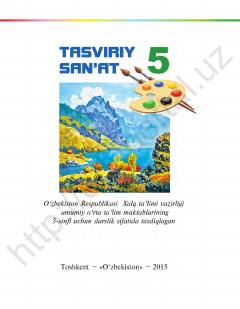

TS5-sinf o'quvchilari uchun tasviriy san'at asoslari va ifodaviy vositalar haqida darslik.
Ushbu darslik umumiy o'rta ta'lim maktablarining 5-sinf o'quvchilari uchun mo'ljallangan bo'lib, tasviriy san'atning ifodaviy vositalari, ranglar nazariyasi va kompozitsiya asoslarini o'rgatadi. Kitobda o'zbek va jahon rassomlarining asarlari tahlili orqali rangtasvir, grafika va haykaltaroshlik tushunchalari yoritib berilgan.